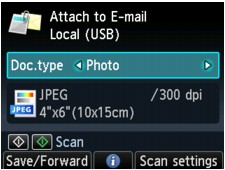

You can attach scanned data to an e-mail using the Operation Panel of the machine.
Before attaching scanned data to an e-mail, confirm the following:
-
The necessary application software (MP Drivers and MP Navigator EX) is installed.
If the application software (MP Drivers and MP Navigator EX) is not yet installed, insert the Setup CD-ROM into the computer's disc drive, then perform Custom Install and select MP Drivers and MP Navigator EX to install.
-
The machine is connected to a computer correctly.
Make sure that the machine is connected to the computer correctly.
Do not plug in or unplug the USB or LAN cable when scanning images with the machine, or when the computer is in sleep or standby mode.
If you perform scanning via a network connection, make sure that all the required settings have been specified. For details, refer to Network Scan Settings.
-
The mail software and the file name are specified in MP Navigator EX.
You can specify the mail software and the file name in MP Navigator EX. For details on how to perform settings or the initial settings, refer to Scanner Button Settings Tab (Attach to E-mail).
-
Make sure that the machine is turned on.
-
Press the SCAN button.
The screen for selecting to which you save the data is displayed.

 Note
Note-
If the Scan standby screen for forwarding the data to the USB-connected computer is displayed on the LCD, press the left Function button to display the screen for selecting to which you save the data.
-
-
Select Attach to E-mail, then press the OK button.
-
Use the

 button to select the computer to forward the scanned data, then press the OK button.
button to select the computer to forward the scanned data, then press the OK button.Select Local (USB) for a USB-connected computer, or select the computer to forward the scanned data for a network-connected computer.
The Scan standby screen is displayed.
 -
Use the

 button to select the document type for Doc.type.
button to select the document type for Doc.type.- Document
-
Scans the original on the Platen Glass or in the ADF applying the optimized settings for scanning a document.
- Photo
-
Scans the original on the Platen Glass applying the optimized settings for scanning a photo.
-
Press the right Function button to specify the settings as necessary.
-
Load the original document on the Platen Glass or in the ADF.
Note-
Refer to Placing Documents for how to load the original.
-
You can confirm the procedure to load the original by pressing the center Function button.
-
-
Press the Color button for color scanning, or the Black button for black & white scanning.
-
If you load the original in the ADF:
The machine starts scanning and scanned data is forwarded to the computer and attached to an e-mail.
-
If you load the original on the Platen Glass:
-
When you select other than PDF or Compact PDF for Format on the scan setting screen, the machine starts scanning and scanned data is forwarded to the computer and attached to an e-mail.
-
When you select PDF or Compact PDF for Format on the scan setting screen, the confirmation screen asking you if you continue scanning is displayed after scanning is complete.
If you continue scanning, load the original on the Platen Glass and start scanning.
If you do not continue scanning, press the left Function button. The scanned data is forwarded to the computer and attached to an e-mail.
-
Scanned data is forwarded to the computer and attached to an e-mail according to the settings specified in MP Navigator EX.
For the settings or how to send an e-mail, refer to the mail software's instruction manual.
Remove the original on the Platen Glass or from the Document Output Slot after scanning is complete.
-